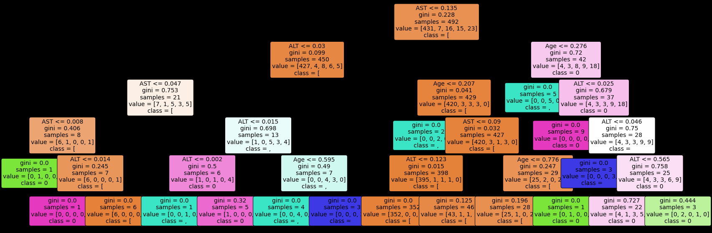

Studi Hepatitis C 5 Fitur
Contents
Studi Hepatitis C 5 Fitur#
Implementasi dengan menggunakan Naive Bayes , K-NN , K-Means Clustering dan Decision Tree
Membaca Data#
import pandas as pd
import numpy as np
data = pd.read_csv('https://raw.githubusercontent.com/maulanamaib/streamlit_wine/master/HepatitisCdata.csv')
data.fillna(0,inplace=True)
data
| Unnamed: 0 | Category | Age | Sex | ALB | ALP | ALT | AST | BIL | CHE | CHOL | CREA | GGT | PROT | |
|---|---|---|---|---|---|---|---|---|---|---|---|---|---|---|
| 0 | 1 | 0=Blood Donor | 32 | m | 38.5 | 52.5 | 7.7 | 22.1 | 7.5 | 6.93 | 3.23 | 106.0 | 12.1 | 69.0 |
| 1 | 2 | 0=Blood Donor | 32 | m | 38.5 | 70.3 | 18.0 | 24.7 | 3.9 | 11.17 | 4.80 | 74.0 | 15.6 | 76.5 |
| 2 | 3 | 0=Blood Donor | 32 | m | 46.9 | 74.7 | 36.2 | 52.6 | 6.1 | 8.84 | 5.20 | 86.0 | 33.2 | 79.3 |
| 3 | 4 | 0=Blood Donor | 32 | m | 43.2 | 52.0 | 30.6 | 22.6 | 18.9 | 7.33 | 4.74 | 80.0 | 33.8 | 75.7 |
| 4 | 5 | 0=Blood Donor | 32 | m | 39.2 | 74.1 | 32.6 | 24.8 | 9.6 | 9.15 | 4.32 | 76.0 | 29.9 | 68.7 |
| ... | ... | ... | ... | ... | ... | ... | ... | ... | ... | ... | ... | ... | ... | ... |
| 610 | 611 | 3=Cirrhosis | 62 | f | 32.0 | 416.6 | 5.9 | 110.3 | 50.0 | 5.57 | 6.30 | 55.7 | 650.9 | 68.5 |
| 611 | 612 | 3=Cirrhosis | 64 | f | 24.0 | 102.8 | 2.9 | 44.4 | 20.0 | 1.54 | 3.02 | 63.0 | 35.9 | 71.3 |
| 612 | 613 | 3=Cirrhosis | 64 | f | 29.0 | 87.3 | 3.5 | 99.0 | 48.0 | 1.66 | 3.63 | 66.7 | 64.2 | 82.0 |
| 613 | 614 | 3=Cirrhosis | 46 | f | 33.0 | 0.0 | 39.0 | 62.0 | 20.0 | 3.56 | 4.20 | 52.0 | 50.0 | 71.0 |
| 614 | 615 | 3=Cirrhosis | 59 | f | 36.0 | 0.0 | 100.0 | 80.0 | 12.0 | 9.07 | 5.30 | 67.0 | 34.0 | 68.0 |
615 rows × 14 columns
# data.nlargest(2,"CREA")
Class#
data['Sex'] = pd.Categorical(data["Sex"])
data["Sex"] = data["Sex"].cat.codes
data
| Unnamed: 0 | Category | Age | Sex | ALB | ALP | ALT | AST | BIL | CHE | CHOL | CREA | GGT | PROT | |
|---|---|---|---|---|---|---|---|---|---|---|---|---|---|---|
| 0 | 1 | 0=Blood Donor | 32 | 1 | 38.5 | 52.5 | 7.7 | 22.1 | 7.5 | 6.93 | 3.23 | 106.0 | 12.1 | 69.0 |
| 1 | 2 | 0=Blood Donor | 32 | 1 | 38.5 | 70.3 | 18.0 | 24.7 | 3.9 | 11.17 | 4.80 | 74.0 | 15.6 | 76.5 |
| 2 | 3 | 0=Blood Donor | 32 | 1 | 46.9 | 74.7 | 36.2 | 52.6 | 6.1 | 8.84 | 5.20 | 86.0 | 33.2 | 79.3 |
| 3 | 4 | 0=Blood Donor | 32 | 1 | 43.2 | 52.0 | 30.6 | 22.6 | 18.9 | 7.33 | 4.74 | 80.0 | 33.8 | 75.7 |
| 4 | 5 | 0=Blood Donor | 32 | 1 | 39.2 | 74.1 | 32.6 | 24.8 | 9.6 | 9.15 | 4.32 | 76.0 | 29.9 | 68.7 |
| ... | ... | ... | ... | ... | ... | ... | ... | ... | ... | ... | ... | ... | ... | ... |
| 610 | 611 | 3=Cirrhosis | 62 | 0 | 32.0 | 416.6 | 5.9 | 110.3 | 50.0 | 5.57 | 6.30 | 55.7 | 650.9 | 68.5 |
| 611 | 612 | 3=Cirrhosis | 64 | 0 | 24.0 | 102.8 | 2.9 | 44.4 | 20.0 | 1.54 | 3.02 | 63.0 | 35.9 | 71.3 |
| 612 | 613 | 3=Cirrhosis | 64 | 0 | 29.0 | 87.3 | 3.5 | 99.0 | 48.0 | 1.66 | 3.63 | 66.7 | 64.2 | 82.0 |
| 613 | 614 | 3=Cirrhosis | 46 | 0 | 33.0 | 0.0 | 39.0 | 62.0 | 20.0 | 3.56 | 4.20 | 52.0 | 50.0 | 71.0 |
| 614 | 615 | 3=Cirrhosis | 59 | 0 | 36.0 | 0.0 | 100.0 | 80.0 | 12.0 | 9.07 | 5.30 | 67.0 | 34.0 | 68.0 |
615 rows × 14 columns
data['Category'] = pd.Categorical(data["Category"])
data["Category"] = data["Category"].cat.codes
data
| Unnamed: 0 | Category | Age | Sex | ALB | ALP | ALT | AST | BIL | CHE | CHOL | CREA | GGT | PROT | |
|---|---|---|---|---|---|---|---|---|---|---|---|---|---|---|
| 0 | 1 | 0 | 32 | 1 | 38.5 | 52.5 | 7.7 | 22.1 | 7.5 | 6.93 | 3.23 | 106.0 | 12.1 | 69.0 |
| 1 | 2 | 0 | 32 | 1 | 38.5 | 70.3 | 18.0 | 24.7 | 3.9 | 11.17 | 4.80 | 74.0 | 15.6 | 76.5 |
| 2 | 3 | 0 | 32 | 1 | 46.9 | 74.7 | 36.2 | 52.6 | 6.1 | 8.84 | 5.20 | 86.0 | 33.2 | 79.3 |
| 3 | 4 | 0 | 32 | 1 | 43.2 | 52.0 | 30.6 | 22.6 | 18.9 | 7.33 | 4.74 | 80.0 | 33.8 | 75.7 |
| 4 | 5 | 0 | 32 | 1 | 39.2 | 74.1 | 32.6 | 24.8 | 9.6 | 9.15 | 4.32 | 76.0 | 29.9 | 68.7 |
| ... | ... | ... | ... | ... | ... | ... | ... | ... | ... | ... | ... | ... | ... | ... |
| 610 | 611 | 4 | 62 | 0 | 32.0 | 416.6 | 5.9 | 110.3 | 50.0 | 5.57 | 6.30 | 55.7 | 650.9 | 68.5 |
| 611 | 612 | 4 | 64 | 0 | 24.0 | 102.8 | 2.9 | 44.4 | 20.0 | 1.54 | 3.02 | 63.0 | 35.9 | 71.3 |
| 612 | 613 | 4 | 64 | 0 | 29.0 | 87.3 | 3.5 | 99.0 | 48.0 | 1.66 | 3.63 | 66.7 | 64.2 | 82.0 |
| 613 | 614 | 4 | 46 | 0 | 33.0 | 0.0 | 39.0 | 62.0 | 20.0 | 3.56 | 4.20 | 52.0 | 50.0 | 71.0 |
| 614 | 615 | 4 | 59 | 0 | 36.0 | 0.0 | 100.0 | 80.0 | 12.0 | 9.07 | 5.30 | 67.0 | 34.0 | 68.0 |
615 rows × 14 columns
fd = data.drop(data.columns[8:14],axis=1)
# fd.drop(X_test.columns[2:4],axis=1)
dt = fd.drop(data.columns[4:6],axis=1)
coba = dt.drop(data.columns[0:1],axis=1)
y = coba['Category'].values
dada = coba.drop(data.columns[1],axis=1)
dada
len(y)
615
from sklearn.model_selection import train_test_split
X_train, X_test, y_train, y_test=train_test_split(dada, y, test_size=0.2, random_state=1)
X_train.shape + X_test.shape
(492, 4, 123, 4)
X_test
| Age | Sex | ALT | AST | |
|---|---|---|---|---|
| 475 | 53 | 0 | 23.0 | 22.1 |
| 473 | 53 | 0 | 20.9 | 42.4 |
| 111 | 42 | 1 | 30.3 | 22.5 |
| 318 | 32 | 0 | 22.0 | 29.8 |
| 13 | 33 | 1 | 15.9 | 24.0 |
| ... | ... | ... | ... | ... |
| 305 | 66 | 1 | 20.3 | 27.3 |
| 201 | 50 | 1 | 46.4 | 32.3 |
| 197 | 50 | 1 | 55.9 | 24.3 |
| 567 | 48 | 1 | 19.3 | 69.1 |
| 588 | 42 | 1 | 14.9 | 263.1 |
123 rows × 4 columns
from pathlib import Path
filepath = Path('/content/drive/MyDrive/datamining/tugas/model/datafix2.csv')
filepath.parent.mkdir(parents=True, exist_ok=True)
dada.to_csv(filepath)
from sklearn import preprocessing
le = preprocessing.LabelEncoder()
le.fit(y)
y = le.transform(y)
y
array([0, 0, 0, 0, 0, 0, 0, 0, 0, 0, 0, 0, 0, 0, 0, 0, 0, 0, 0, 0, 0, 0,
0, 0, 0, 0, 0, 0, 0, 0, 0, 0, 0, 0, 0, 0, 0, 0, 0, 0, 0, 0, 0, 0,
0, 0, 0, 0, 0, 0, 0, 0, 0, 0, 0, 0, 0, 0, 0, 0, 0, 0, 0, 0, 0, 0,
0, 0, 0, 0, 0, 0, 0, 0, 0, 0, 0, 0, 0, 0, 0, 0, 0, 0, 0, 0, 0, 0,
0, 0, 0, 0, 0, 0, 0, 0, 0, 0, 0, 0, 0, 0, 0, 0, 0, 0, 0, 0, 0, 0,
0, 0, 0, 0, 0, 0, 0, 0, 0, 0, 0, 0, 0, 0, 0, 0, 0, 0, 0, 0, 0, 0,
0, 0, 0, 0, 0, 0, 0, 0, 0, 0, 0, 0, 0, 0, 0, 0, 0, 0, 0, 0, 0, 0,
0, 0, 0, 0, 0, 0, 0, 0, 0, 0, 0, 0, 0, 0, 0, 0, 0, 0, 0, 0, 0, 0,
0, 0, 0, 0, 0, 0, 0, 0, 0, 0, 0, 0, 0, 0, 0, 0, 0, 0, 0, 0, 0, 0,
0, 0, 0, 0, 0, 0, 0, 0, 0, 0, 0, 0, 0, 0, 0, 0, 0, 0, 0, 0, 0, 0,
0, 0, 0, 0, 0, 0, 0, 0, 0, 0, 0, 0, 0, 0, 0, 0, 0, 0, 0, 0, 0, 0,
0, 0, 0, 0, 0, 0, 0, 0, 0, 0, 0, 0, 0, 0, 0, 0, 0, 0, 0, 0, 0, 0,
0, 0, 0, 0, 0, 0, 0, 0, 0, 0, 0, 0, 0, 0, 0, 0, 0, 0, 0, 0, 0, 0,
0, 0, 0, 0, 0, 0, 0, 0, 0, 0, 0, 0, 0, 0, 0, 0, 0, 0, 0, 0, 0, 0,
0, 0, 0, 0, 0, 0, 0, 0, 0, 0, 0, 0, 0, 0, 0, 0, 0, 0, 0, 0, 0, 0,
0, 0, 0, 0, 0, 0, 0, 0, 0, 0, 0, 0, 0, 0, 0, 0, 0, 0, 0, 0, 0, 0,
0, 0, 0, 0, 0, 0, 0, 0, 0, 0, 0, 0, 0, 0, 0, 0, 0, 0, 0, 0, 0, 0,
0, 0, 0, 0, 0, 0, 0, 0, 0, 0, 0, 0, 0, 0, 0, 0, 0, 0, 0, 0, 0, 0,
0, 0, 0, 0, 0, 0, 0, 0, 0, 0, 0, 0, 0, 0, 0, 0, 0, 0, 0, 0, 0, 0,
0, 0, 0, 0, 0, 0, 0, 0, 0, 0, 0, 0, 0, 0, 0, 0, 0, 0, 0, 0, 0, 0,
0, 0, 0, 0, 0, 0, 0, 0, 0, 0, 0, 0, 0, 0, 0, 0, 0, 0, 0, 0, 0, 0,
0, 0, 0, 0, 0, 0, 0, 0, 0, 0, 0, 0, 0, 0, 0, 0, 0, 0, 0, 0, 0, 0,
0, 0, 0, 0, 0, 0, 0, 0, 0, 0, 0, 0, 0, 0, 0, 0, 0, 0, 0, 0, 0, 0,
0, 0, 0, 0, 0, 0, 0, 0, 0, 0, 0, 0, 0, 0, 0, 0, 0, 0, 0, 0, 0, 0,
0, 0, 0, 0, 0, 1, 1, 1, 1, 1, 1, 1, 2, 2, 2, 2, 2, 2, 2, 2, 2, 2,
2, 2, 2, 2, 2, 2, 2, 2, 2, 2, 2, 2, 2, 2, 3, 3, 3, 3, 3, 3, 3, 3,
3, 3, 3, 3, 3, 3, 3, 3, 3, 3, 3, 3, 3, 4, 4, 4, 4, 4, 4, 4, 4, 4,
4, 4, 4, 4, 4, 4, 4, 4, 4, 4, 4, 4, 4, 4, 4, 4, 4, 4, 4, 4, 4])
from sklearn import preprocessing
le = preprocessing.LabelEncoder()
le.fit(y)
y = le.transform(y)
y
array([0, 0, 0, 0, 0, 0, 0, 0, 0, 0, 0, 0, 0, 0, 0, 0, 0, 0, 0, 0, 0, 0,
0, 0, 0, 0, 0, 0, 0, 0, 0, 0, 0, 0, 0, 0, 0, 0, 0, 0, 0, 0, 0, 0,
0, 0, 0, 0, 0, 0, 0, 0, 0, 0, 0, 0, 0, 0, 0, 0, 0, 0, 0, 0, 0, 0,
0, 0, 0, 0, 0, 0, 0, 0, 0, 0, 0, 0, 0, 0, 0, 0, 0, 0, 0, 0, 0, 0,
0, 0, 0, 0, 0, 0, 0, 0, 0, 0, 0, 0, 0, 0, 0, 0, 0, 0, 0, 0, 0, 0,
0, 0, 0, 0, 0, 0, 0, 0, 0, 0, 0, 0, 0, 0, 0, 0, 0, 0, 0, 0, 0, 0,
0, 0, 0, 0, 0, 0, 0, 0, 0, 0, 0, 0, 0, 0, 0, 0, 0, 0, 0, 0, 0, 0,
0, 0, 0, 0, 0, 0, 0, 0, 0, 0, 0, 0, 0, 0, 0, 0, 0, 0, 0, 0, 0, 0,
0, 0, 0, 0, 0, 0, 0, 0, 0, 0, 0, 0, 0, 0, 0, 0, 0, 0, 0, 0, 0, 0,
0, 0, 0, 0, 0, 0, 0, 0, 0, 0, 0, 0, 0, 0, 0, 0, 0, 0, 0, 0, 0, 0,
0, 0, 0, 0, 0, 0, 0, 0, 0, 0, 0, 0, 0, 0, 0, 0, 0, 0, 0, 0, 0, 0,
0, 0, 0, 0, 0, 0, 0, 0, 0, 0, 0, 0, 0, 0, 0, 0, 0, 0, 0, 0, 0, 0,
0, 0, 0, 0, 0, 0, 0, 0, 0, 0, 0, 0, 0, 0, 0, 0, 0, 0, 0, 0, 0, 0,
0, 0, 0, 0, 0, 0, 0, 0, 0, 0, 0, 0, 0, 0, 0, 0, 0, 0, 0, 0, 0, 0,
0, 0, 0, 0, 0, 0, 0, 0, 0, 0, 0, 0, 0, 0, 0, 0, 0, 0, 0, 0, 0, 0,
0, 0, 0, 0, 0, 0, 0, 0, 0, 0, 0, 0, 0, 0, 0, 0, 0, 0, 0, 0, 0, 0,
0, 0, 0, 0, 0, 0, 0, 0, 0, 0, 0, 0, 0, 0, 0, 0, 0, 0, 0, 0, 0, 0,
0, 0, 0, 0, 0, 0, 0, 0, 0, 0, 0, 0, 0, 0, 0, 0, 0, 0, 0, 0, 0, 0,
0, 0, 0, 0, 0, 0, 0, 0, 0, 0, 0, 0, 0, 0, 0, 0, 0, 0, 0, 0, 0, 0,
0, 0, 0, 0, 0, 0, 0, 0, 0, 0, 0, 0, 0, 0, 0, 0, 0, 0, 0, 0, 0, 0,
0, 0, 0, 0, 0, 0, 0, 0, 0, 0, 0, 0, 0, 0, 0, 0, 0, 0, 0, 0, 0, 0,
0, 0, 0, 0, 0, 0, 0, 0, 0, 0, 0, 0, 0, 0, 0, 0, 0, 0, 0, 0, 0, 0,
0, 0, 0, 0, 0, 0, 0, 0, 0, 0, 0, 0, 0, 0, 0, 0, 0, 0, 0, 0, 0, 0,
0, 0, 0, 0, 0, 0, 0, 0, 0, 0, 0, 0, 0, 0, 0, 0, 0, 0, 0, 0, 0, 0,
0, 0, 0, 0, 0, 1, 1, 1, 1, 1, 1, 1, 2, 2, 2, 2, 2, 2, 2, 2, 2, 2,
2, 2, 2, 2, 2, 2, 2, 2, 2, 2, 2, 2, 2, 2, 3, 3, 3, 3, 3, 3, 3, 3,
3, 3, 3, 3, 3, 3, 3, 3, 3, 3, 3, 3, 3, 4, 4, 4, 4, 4, 4, 4, 4, 4,
4, 4, 4, 4, 4, 4, 4, 4, 4, 4, 4, 4, 4, 4, 4, 4, 4, 4, 4, 4, 4])
y_class = data['Category']
y = y_class.values.tolist()
print(y)
[0, 0, 0, 0, 0, 0, 0, 0, 0, 0, 0, 0, 0, 0, 0, 0, 0, 0, 0, 0, 0, 0, 0, 0, 0, 0, 0, 0, 0, 0, 0, 0, 0, 0, 0, 0, 0, 0, 0, 0, 0, 0, 0, 0, 0, 0, 0, 0, 0, 0, 0, 0, 0, 0, 0, 0, 0, 0, 0, 0, 0, 0, 0, 0, 0, 0, 0, 0, 0, 0, 0, 0, 0, 0, 0, 0, 0, 0, 0, 0, 0, 0, 0, 0, 0, 0, 0, 0, 0, 0, 0, 0, 0, 0, 0, 0, 0, 0, 0, 0, 0, 0, 0, 0, 0, 0, 0, 0, 0, 0, 0, 0, 0, 0, 0, 0, 0, 0, 0, 0, 0, 0, 0, 0, 0, 0, 0, 0, 0, 0, 0, 0, 0, 0, 0, 0, 0, 0, 0, 0, 0, 0, 0, 0, 0, 0, 0, 0, 0, 0, 0, 0, 0, 0, 0, 0, 0, 0, 0, 0, 0, 0, 0, 0, 0, 0, 0, 0, 0, 0, 0, 0, 0, 0, 0, 0, 0, 0, 0, 0, 0, 0, 0, 0, 0, 0, 0, 0, 0, 0, 0, 0, 0, 0, 0, 0, 0, 0, 0, 0, 0, 0, 0, 0, 0, 0, 0, 0, 0, 0, 0, 0, 0, 0, 0, 0, 0, 0, 0, 0, 0, 0, 0, 0, 0, 0, 0, 0, 0, 0, 0, 0, 0, 0, 0, 0, 0, 0, 0, 0, 0, 0, 0, 0, 0, 0, 0, 0, 0, 0, 0, 0, 0, 0, 0, 0, 0, 0, 0, 0, 0, 0, 0, 0, 0, 0, 0, 0, 0, 0, 0, 0, 0, 0, 0, 0, 0, 0, 0, 0, 0, 0, 0, 0, 0, 0, 0, 0, 0, 0, 0, 0, 0, 0, 0, 0, 0, 0, 0, 0, 0, 0, 0, 0, 0, 0, 0, 0, 0, 0, 0, 0, 0, 0, 0, 0, 0, 0, 0, 0, 0, 0, 0, 0, 0, 0, 0, 0, 0, 0, 0, 0, 0, 0, 0, 0, 0, 0, 0, 0, 0, 0, 0, 0, 0, 0, 0, 0, 0, 0, 0, 0, 0, 0, 0, 0, 0, 0, 0, 0, 0, 0, 0, 0, 0, 0, 0, 0, 0, 0, 0, 0, 0, 0, 0, 0, 0, 0, 0, 0, 0, 0, 0, 0, 0, 0, 0, 0, 0, 0, 0, 0, 0, 0, 0, 0, 0, 0, 0, 0, 0, 0, 0, 0, 0, 0, 0, 0, 0, 0, 0, 0, 0, 0, 0, 0, 0, 0, 0, 0, 0, 0, 0, 0, 0, 0, 0, 0, 0, 0, 0, 0, 0, 0, 0, 0, 0, 0, 0, 0, 0, 0, 0, 0, 0, 0, 0, 0, 0, 0, 0, 0, 0, 0, 0, 0, 0, 0, 0, 0, 0, 0, 0, 0, 0, 0, 0, 0, 0, 0, 0, 0, 0, 0, 0, 0, 0, 0, 0, 0, 0, 0, 0, 0, 0, 0, 0, 0, 0, 0, 0, 0, 0, 0, 0, 0, 0, 0, 0, 0, 0, 0, 0, 0, 0, 0, 0, 0, 0, 0, 0, 0, 0, 0, 0, 0, 0, 0, 0, 0, 0, 0, 0, 0, 0, 0, 0, 0, 0, 0, 0, 0, 0, 1, 1, 1, 1, 1, 1, 1, 2, 2, 2, 2, 2, 2, 2, 2, 2, 2, 2, 2, 2, 2, 2, 2, 2, 2, 2, 2, 2, 2, 2, 2, 3, 3, 3, 3, 3, 3, 3, 3, 3, 3, 3, 3, 3, 3, 3, 3, 3, 3, 3, 3, 3, 4, 4, 4, 4, 4, 4, 4, 4, 4, 4, 4, 4, 4, 4, 4, 4, 4, 4, 4, 4, 4, 4, 4, 4, 4, 4, 4, 4, 4, 4]
y_class
0 0
1 0
2 0
3 0
4 0
..
610 4
611 4
612 4
613 4
614 4
Name: Category, Length: 615, dtype: int8
Drop Target / Class#
col = ['Unnamed: 0','Category']
X = data.drop(columns=col)
X
| Age | Sex | ALB | ALP | ALT | AST | BIL | CHE | CHOL | CREA | GGT | PROT | |
|---|---|---|---|---|---|---|---|---|---|---|---|---|
| 0 | 32 | 1 | 38.5 | 52.5 | 7.7 | 22.1 | 7.5 | 6.93 | 3.23 | 106.0 | 12.1 | 69.0 |
| 1 | 32 | 1 | 38.5 | 70.3 | 18.0 | 24.7 | 3.9 | 11.17 | 4.80 | 74.0 | 15.6 | 76.5 |
| 2 | 32 | 1 | 46.9 | 74.7 | 36.2 | 52.6 | 6.1 | 8.84 | 5.20 | 86.0 | 33.2 | 79.3 |
| 3 | 32 | 1 | 43.2 | 52.0 | 30.6 | 22.6 | 18.9 | 7.33 | 4.74 | 80.0 | 33.8 | 75.7 |
| 4 | 32 | 1 | 39.2 | 74.1 | 32.6 | 24.8 | 9.6 | 9.15 | 4.32 | 76.0 | 29.9 | 68.7 |
| ... | ... | ... | ... | ... | ... | ... | ... | ... | ... | ... | ... | ... |
| 610 | 62 | 0 | 32.0 | 416.6 | 5.9 | 110.3 | 50.0 | 5.57 | 6.30 | 55.7 | 650.9 | 68.5 |
| 611 | 64 | 0 | 24.0 | 102.8 | 2.9 | 44.4 | 20.0 | 1.54 | 3.02 | 63.0 | 35.9 | 71.3 |
| 612 | 64 | 0 | 29.0 | 87.3 | 3.5 | 99.0 | 48.0 | 1.66 | 3.63 | 66.7 | 64.2 | 82.0 |
| 613 | 46 | 0 | 33.0 | 0.0 | 39.0 | 62.0 | 20.0 | 3.56 | 4.20 | 52.0 | 50.0 | 71.0 |
| 614 | 59 | 0 | 36.0 | 0.0 | 100.0 | 80.0 | 12.0 | 9.07 | 5.30 | 67.0 | 34.0 | 68.0 |
615 rows × 12 columns
Preprocessing Min-Max#
Normalisasi data menggunakan Min - Max
from sklearn.preprocessing import MinMaxScaler
scaler = MinMaxScaler()
scaled = scaler.fit_transform(dada)
nama_fitur = dada.columns.copy()
scaled_fitur = pd.DataFrame(scaled,columns=nama_fitur)
scaled_fitur
| Age | Sex | ALT | AST | |
|---|---|---|---|---|
| 0 | 0.224138 | 1.0 | 0.023670 | 0.036694 |
| 1 | 0.224138 | 1.0 | 0.055334 | 0.044990 |
| 2 | 0.224138 | 1.0 | 0.111282 | 0.134014 |
| 3 | 0.224138 | 1.0 | 0.094067 | 0.038290 |
| 4 | 0.224138 | 1.0 | 0.100215 | 0.045310 |
| ... | ... | ... | ... | ... |
| 610 | 0.741379 | 0.0 | 0.018137 | 0.318124 |
| 611 | 0.775862 | 0.0 | 0.008915 | 0.107849 |
| 612 | 0.775862 | 0.0 | 0.010759 | 0.282068 |
| 613 | 0.465517 | 0.0 | 0.119889 | 0.164008 |
| 614 | 0.689655 | 0.0 | 0.307409 | 0.221442 |
615 rows × 4 columns
from sklearn.model_selection import train_test_split
X_train, X_test, y_train, y_test=train_test_split(scaled_fitur, y, test_size=0.2, random_state=1)
X_train.shape + X_test.shape
(492, 4, 123, 4)
Save Normalisasi#
# fd = X_test.drop(X_test.columns[6:13],axis=1)
# fd.drop(X_test.columns[2:4],axis=1)
# coba = fd.drop(X_test.columns[2:4],axis=1)
# coba
X_test
| Age | Sex | ALT | AST | |
|---|---|---|---|---|
| 475 | 0.586207 | 0.0 | 0.070704 | 0.036694 |
| 473 | 0.586207 | 0.0 | 0.064248 | 0.101468 |
| 111 | 0.396552 | 1.0 | 0.093145 | 0.037971 |
| 318 | 0.224138 | 0.0 | 0.067630 | 0.061264 |
| 13 | 0.241379 | 1.0 | 0.048878 | 0.042757 |
| ... | ... | ... | ... | ... |
| 305 | 0.810345 | 1.0 | 0.062404 | 0.053287 |
| 201 | 0.534483 | 1.0 | 0.142638 | 0.069241 |
| 197 | 0.534483 | 1.0 | 0.171841 | 0.043714 |
| 567 | 0.500000 | 1.0 | 0.059330 | 0.186662 |
| 588 | 0.396552 | 1.0 | 0.045804 | 0.805680 |
123 rows × 4 columns
# from pathlib import Path
# filepath = Path('/content/drive/MyDrive/datamining/tugas/model/datafix2.csv')
# filepath.parent.mkdir(parents=True, exist_ok=True)
# coba.to_csv(filepath)
import joblib
filename = '/content/drive/MyDrive/datamining/tugas/model/caca.sav'
joblib.dump(scaler, filename)
['/content/drive/MyDrive/datamining/tugas/model/caca.sav']
# filenameCsv = '/content/drive/MyDrive/datamining/tugas/model/data2.csv'
# joblib.dump(X , filenameCsv)
# from pathlib import Path
# filepath = Path('/content/drive/MyDrive/datamining/tugas/model/data3.csv')
# filepath.parent.mkdir(parents=True, exist_ok=True)
# X.to_csv(filepath)
filenameCsv = '/content/drive/MyDrive/datamining/tugas/model/data2.csv'
joblib.dump(X , filenameCsv)
['/content/drive/MyDrive/datamining/tugas/model/data2.csv']
filenameCsv = '/content/drive/MyDrive/datamining/tugas/model/data2.csv'
joblib.dump(X , filenameCsv)
['/content/drive/MyDrive/datamining/tugas/model/data2.csv']
Split Data#
# from google.colab import drive
# drive.mount('/content/drive')
split data 20%
from pathlib import Path
filepath = Path('/content/drive/MyDrive/datamining/tugas/model/datatestfix.csv')
filepath.parent.mkdir(parents=True, exist_ok=True)
X_test.to_csv(filepath)
Inisialisasi Model Naive Bayes (gaussian)#
Eksekusi pada Model#
# import pandas as pd
# X_train.info()
# X_train.isnull().any()
# X_train.isna().sum()
# a = data.drop(columns='Category')
# a
# # Langkah 1
# rata_2 = X_train['ALP'].mean()
# # Langkah 2
# X_train['ALP'] = X_train['ALP'].fillna(rata_2)
# # Langkah
# X_train['ALP'].isna().sum()
# # Langkah 1
# rata_2 = X_train['ALT'].mean()
# # Langkah 2
# X_train['ALT'] = X_train['ALT'].fillna(rata_2)
# # Langkah
# X_train['ALT'].isna().sum()
# # Langkah 1
# rata_2 = X_train['ALB'].mean()
# # Langkah 2
# X_train['ALB'] = X_train['ALB'].fillna(rata_2)
# # Langkah
# X_train['ALB'].isna().sum()
# np.isnan(X.values.any())
# X_test.fillna(X_train.mean(), inplace=True)
# X_train.isna().any()
# data.isnull().sum()
from sklearn.naive_bayes import GaussianNB
clf = GaussianNB()
clf.fit(X_train,y_train)
y_pred = clf.predict(X_test)
probas = clf.predict_proba(X_test)[:,1]
y_pred
array([0, 0, 0, 0, 0, 0, 0, 0, 0, 0, 0, 0, 0, 0, 0, 0, 0, 0, 0, 0, 0, 3,
0, 0, 3, 0, 4, 3, 0, 0, 0, 0, 0, 0, 0, 0, 3, 0, 2, 0, 0, 0, 0, 0,
0, 0, 0, 0, 0, 0, 0, 0, 0, 0, 4, 0, 0, 0, 0, 0, 0, 3, 0, 0, 0, 0,
0, 0, 0, 2, 4, 4, 4, 0, 0, 0, 0, 0, 0, 0, 0, 0, 0, 0, 0, 0, 0, 0,
0, 0, 0, 0, 0, 0, 0, 0, 0, 0, 0, 0, 0, 0, 0, 4, 0, 0, 4, 0, 0, 0,
0, 4, 0, 0, 0, 0, 0, 4, 0, 0, 0, 2, 4])
from sklearn.neighbors import KNeighborsClassifier
from sklearn.metrics import accuracy_score, f1_score, precision_score, recall_score, classification_report, confusion_matrix
from sklearn import metrics
#Try running from k=1 through 30 and record testing accuracy
k_range = range(1,31)
scores = {}
scores_list = []
for k in k_range:
# install model
knn = KNeighborsClassifier(n_neighbors=k)
knn.fit(X_train,y_train)
# filenameKNN = '/content/drive/MyDrive/datamining/tugas/model/knnmodel'+str(k)+'.pkl'
joblib.dump(knn,filenameKNN)
y_pred=knn.predict(X_test)
scores[k] = accuracy_score(y_test,y_pred)
scores_list.append(accuracy_score(y_test,y_pred))
scores
NameErrorTraceback (most recent call last)
<ipython-input-39-28f699330001> in <module>
12
13 # filenameKNN = '/content/drive/MyDrive/datamining/tugas/model/knnmodel'+str(k)+'.pkl'
---> 14 joblib.dump(knn,filenameKNN)
15 y_pred=knn.predict(X_test)
16 scores[k] = accuracy_score(y_test,y_pred)
NameError: name 'filenameKNN' is not defined
X_test
| Age | Sex | ALT | AST | |
|---|---|---|---|---|
| 475 | 0.586207 | 0.0 | 0.070704 | 0.036694 |
| 473 | 0.586207 | 0.0 | 0.064248 | 0.101468 |
| 111 | 0.396552 | 1.0 | 0.093145 | 0.037971 |
| 318 | 0.224138 | 0.0 | 0.067630 | 0.061264 |
| 13 | 0.241379 | 1.0 | 0.048878 | 0.042757 |
| ... | ... | ... | ... | ... |
| 305 | 0.810345 | 1.0 | 0.062404 | 0.053287 |
| 201 | 0.534483 | 1.0 | 0.142638 | 0.069241 |
| 197 | 0.534483 | 1.0 | 0.171841 | 0.043714 |
| 567 | 0.500000 | 1.0 | 0.059330 | 0.186662 |
| 588 | 0.396552 | 1.0 | 0.045804 | 0.805680 |
123 rows × 4 columns
for i in range(len(y_test)):
if y_test[i] != y_pred[i]:
print(y_pred[i])
0
0
0
0
0
0
0
0
0
0
0
0
0
0
0
4
0
0
0
0
print (X_train,y_train)
Age Sex ALT AST
241 0.603448 1.0 0.159238 0.080089
245 0.620690 1.0 0.031356 0.011168
607 0.568966 0.0 0.003996 0.063178
242 0.620690 1.0 0.080848 0.048819
200 0.534483 1.0 0.134952 0.080408
.. ... ... ... ...
129 0.431034 1.0 0.052874 0.064135
144 0.448276 1.0 0.185367 0.071155
72 0.327586 1.0 0.050108 0.038928
235 0.586207 1.0 0.131571 0.059987
37 0.275862 1.0 0.074085 0.065093
[492 rows x 4 columns] [0, 0, 4, 0, 0, 0, 0, 0, 0, 0, 0, 0, 2, 0, 3, 0, 0, 0, 0, 0, 0, 0, 0, 0, 4, 0, 0, 0, 0, 4, 0, 0, 0, 0, 0, 0, 0, 4, 0, 0, 0, 3, 3, 0, 2, 0, 0, 0, 0, 0, 0, 0, 0, 0, 0, 0, 0, 0, 0, 0, 1, 0, 0, 0, 0, 0, 4, 0, 0, 4, 0, 0, 0, 2, 0, 0, 0, 0, 0, 0, 0, 0, 0, 0, 0, 4, 0, 0, 0, 0, 0, 0, 0, 0, 0, 0, 1, 0, 0, 0, 0, 0, 0, 0, 0, 0, 0, 4, 0, 0, 0, 0, 0, 0, 0, 0, 0, 0, 0, 0, 0, 0, 0, 0, 1, 0, 3, 0, 0, 0, 0, 4, 0, 0, 0, 0, 0, 0, 0, 0, 0, 0, 0, 0, 0, 0, 0, 0, 0, 0, 0, 0, 0, 0, 0, 0, 0, 0, 0, 0, 0, 0, 0, 0, 0, 0, 0, 0, 0, 0, 0, 1, 0, 0, 0, 0, 0, 3, 0, 0, 0, 0, 0, 0, 0, 0, 0, 3, 0, 0, 0, 0, 0, 0, 0, 0, 4, 0, 0, 0, 4, 0, 0, 0, 0, 0, 0, 0, 0, 3, 0, 0, 0, 0, 0, 0, 0, 0, 0, 0, 0, 0, 0, 0, 0, 0, 0, 0, 0, 0, 0, 4, 0, 0, 0, 0, 0, 0, 0, 0, 0, 0, 0, 0, 0, 0, 0, 0, 0, 0, 0, 0, 0, 0, 0, 0, 2, 1, 0, 0, 0, 0, 2, 0, 0, 0, 0, 3, 0, 0, 0, 2, 0, 0, 0, 0, 4, 4, 0, 0, 0, 4, 0, 0, 0, 4, 0, 4, 0, 0, 0, 0, 0, 0, 0, 0, 0, 0, 0, 0, 0, 0, 0, 0, 0, 0, 0, 2, 2, 0, 0, 0, 3, 0, 0, 0, 0, 0, 0, 0, 2, 0, 0, 0, 0, 0, 4, 0, 0, 0, 0, 2, 0, 0, 1, 0, 0, 0, 4, 0, 0, 0, 0, 0, 0, 0, 0, 0, 0, 0, 0, 0, 0, 0, 4, 4, 2, 0, 0, 0, 0, 0, 0, 0, 0, 0, 0, 0, 0, 0, 0, 0, 0, 0, 0, 0, 0, 0, 0, 0, 3, 0, 0, 0, 0, 0, 0, 0, 0, 0, 0, 0, 0, 0, 0, 0, 0, 0, 0, 0, 0, 2, 0, 0, 0, 0, 4, 3, 0, 0, 0, 0, 0, 0, 3, 0, 0, 0, 0, 0, 0, 0, 0, 0, 0, 0, 2, 0, 0, 0, 3, 0, 0, 0, 0, 0, 0, 0, 0, 0, 0, 0, 0, 0, 0, 0, 0, 0, 0, 0, 0, 4, 2, 0, 0, 0, 2, 0, 0, 0, 0, 0, 0, 0, 1, 0, 0, 0, 0, 0, 0, 0, 0, 3, 2, 0, 0, 0, 0, 0, 0, 0, 0, 0, 0, 0, 3, 0, 0, 0, 0, 0]
Save Model Naive bayes#
import joblib
filenameNB = '/content/drive/MyDrive/datamining/tugas/model/modelNB.pkl'
joblib.dump(clf,filenameNB)
['/content/drive/MyDrive/datamining/tugas/model/modelNB.pkl']
X_train
| Age | Sex | ALT | AST | |
|---|---|---|---|---|
| 241 | 0.603448 | 1.0 | 0.159238 | 0.080089 |
| 245 | 0.620690 | 1.0 | 0.031356 | 0.011168 |
| 607 | 0.568966 | 0.0 | 0.003996 | 0.063178 |
| 242 | 0.620690 | 1.0 | 0.080848 | 0.048819 |
| 200 | 0.534483 | 1.0 | 0.134952 | 0.080408 |
| ... | ... | ... | ... | ... |
| 129 | 0.431034 | 1.0 | 0.052874 | 0.064135 |
| 144 | 0.448276 | 1.0 | 0.185367 | 0.071155 |
| 72 | 0.327586 | 1.0 | 0.050108 | 0.038928 |
| 235 | 0.586207 | 1.0 | 0.131571 | 0.059987 |
| 37 | 0.275862 | 1.0 | 0.074085 | 0.065093 |
492 rows × 4 columns
Menghitung Probas#
probas
array([3.82181404e-05, 1.34072315e-04, 1.63793800e-04, 6.18531200e-06,
8.65839776e-05, 9.36654545e-04, 6.44897051e-06, 1.28269047e-04,
4.01413976e-05, 2.72176734e-04, 4.08009023e-03, 1.59947749e-04,
1.13067275e-05, 2.50582181e-05, 4.37228614e-05, 1.21410095e-04,
7.29218991e-06, 9.30629252e-05, 1.99017981e-03, 6.59255659e-04,
4.61028840e-05, 1.56667953e-01, 1.54497430e-04, 1.37603155e-03,
1.42748497e-01, 8.88439997e-05, 5.19378135e-03, 1.05070803e-01,
1.34210784e-04, 1.48369950e-03, 2.54219390e-04, 4.87604779e-05,
3.52200783e-04, 8.99426266e-04, 1.24727511e-04, 6.47434734e-04,
1.53600661e-01, 4.72300927e-04, 3.39217170e-03, 1.23250935e-04,
2.26351279e-03, 2.00027986e-05, 7.75249036e-04, 2.10946844e-04,
6.86410658e-05, 2.45025642e-05, 1.21232209e-05, 3.01202254e-05,
2.37712700e-03, 1.96886298e-05, 3.89084618e-04, 1.33073046e-04,
3.20322504e-05, 3.61043283e-04, 5.77811217e-02, 1.06021148e-04,
1.27176914e-03, 4.16168487e-05, 3.44465787e-05, 2.52402537e-05,
7.14840844e-05, 2.58463803e-01, 3.30864282e-03, 6.50081092e-04,
5.72944492e-04, 6.91096713e-04, 1.57343150e-05, 6.92717765e-05,
1.08077321e-03, 1.94488994e-02, 1.77940264e-02, 1.43996031e-02,
7.32166096e-02, 3.12480809e-04, 1.81983605e-04, 2.02080363e-04,
1.67545590e-05, 4.00569633e-04, 6.83575721e-06, 2.04258601e-05,
3.39146228e-04, 9.58605811e-05, 1.94610019e-05, 1.08402798e-04,
2.07823280e-04, 2.24416249e-05, 1.23356929e-04, 6.56174029e-04,
1.43480976e-04, 1.81341245e-05, 7.68895335e-05, 9.32606802e-05,
2.21743805e-04, 1.55699936e-04, 2.04784379e-02, 1.48440086e-03,
7.92117768e-03, 6.20343555e-04, 8.55605616e-06, 1.48339915e-04,
3.70241912e-05, 3.68406971e-05, 7.54110690e-04, 6.09449002e-02,
9.60560435e-04, 1.67503206e-05, 1.41912122e-04, 6.51034945e-05,
1.20486692e-04, 2.27931142e-04, 1.15457908e-03, 6.25440600e-02,
7.93591524e-06, 9.60868716e-04, 7.05388970e-05, 6.51404413e-04,
7.36946474e-05, 1.31387738e-04, 2.33330299e-03, 1.19473864e-03,
2.85461301e-03, 4.08564333e-02, 1.32259907e-03])
“”
from sklearn.metrics import accuracy_score, f1_score, precision_score, recall_score, classification_report, confusion_matrix
cm = confusion_matrix(y_test,y_pred)
precision = round(precision_score(y_test,y_pred, average="macro")*100,2)
acc_nb = round(accuracy_score(y_test,y_pred)*100,2)
recall = round(recall_score(y_test,y_pred, average="macro")*100,2)
f1score = round(f1_score(y_test, y_pred, average="macro")*100,2)
print('Konfusi Matrix\n',cm)
print('precision: {}'.format(precision))
print('recall: {}'.format(recall))
print('fscore: {}'.format(f1score))
print('accuracy: {}'.format(acc_nb))
Konfusi Matrix
[[102 0 0 0]
[ 7 0 0 1]
[ 6 0 0 0]
[ 6 0 0 1]]
precision: 33.57
recall: 28.57
fscore: 28.43
accuracy: 83.74
/usr/local/lib/python3.7/dist-packages/sklearn/metrics/_classification.py:1318: UndefinedMetricWarning: Precision is ill-defined and being set to 0.0 in labels with no predicted samples. Use `zero_division` parameter to control this behavior.
_warn_prf(average, modifier, msg_start, len(result))
Predict Input To Naive Bayes Model#
list_input = []
list_input.append('6 1 32 43'.split())
# list_input.append('50 0 120 289'.split())
# list_input.append('70 1 130 322'.split())
# list_input.append('67 0 115 564'.split())
list_input
[['6', '1', '32', '43']]
input to Model Normalisasi
X_test
| Age | Sex | ALT | AST | |
|---|---|---|---|---|
| 475 | 0.586207 | 0.0 | 0.070704 | 0.036694 |
| 473 | 0.586207 | 0.0 | 0.064248 | 0.101468 |
| 111 | 0.396552 | 1.0 | 0.093145 | 0.037971 |
| 318 | 0.224138 | 0.0 | 0.067630 | 0.061264 |
| 13 | 0.241379 | 1.0 | 0.048878 | 0.042757 |
| ... | ... | ... | ... | ... |
| 305 | 0.810345 | 1.0 | 0.062404 | 0.053287 |
| 201 | 0.534483 | 1.0 | 0.142638 | 0.069241 |
| 197 | 0.534483 | 1.0 | 0.171841 | 0.043714 |
| 567 | 0.500000 | 1.0 | 0.059330 | 0.186662 |
| 588 | 0.396552 | 1.0 | 0.045804 | 0.805680 |
123 rows × 4 columns
from sklearn.preprocessing import StandardScaler
norm = joblib.load(filename)
pred_input = norm.fit_transform(list_input)
pred_input=pd.DataFrame(pred_input,columns=nama_fitur)
pred_input
| Age | Sex | ALT | AST | |
|---|---|---|---|---|
| 0 | 0.0 | 0.0 | 0.0 | 0.0 |
Input to Model Naive Bayes
nb = joblib.load(filenameNB)
input_pred = nb.predict(pred_input)
input_pred
array([0])
Inisialisasi Model KNN#
Eksekusi Pada model#
from sklearn.neighbors import KNeighborsClassifier
from sklearn import metrics
#Try running from k=1 through 30 and record testing accuracy
k_range = range(1,31)
scores = {}
scores_list = []
for k in k_range:
# install model
knn = KNeighborsClassifier(n_neighbors=k)
knn.fit(X_train,y_train)
# save model
filenameKNN = '/content/drive/MyDrive/datamining/tugas/model/KNNmodel'+str(k)+'.pkl'
joblib.dump(knn,filenameKNN)
y_pred=knn.predict(X_test)
scores[k] = accuracy_score(y_test,y_pred)
scores_list.append(accuracy_score(y_test,y_pred))
scores
{1: 0.8536585365853658,
2: 0.8455284552845529,
3: 0.8536585365853658,
4: 0.8699186991869918,
5: 0.8617886178861789,
6: 0.8617886178861789,
7: 0.8617886178861789,
8: 0.8536585365853658,
9: 0.8455284552845529,
10: 0.8455284552845529,
11: 0.8455284552845529,
12: 0.8455284552845529,
13: 0.8455284552845529,
14: 0.8455284552845529,
15: 0.8455284552845529,
16: 0.8455284552845529,
17: 0.8455284552845529,
18: 0.8455284552845529,
19: 0.8455284552845529,
20: 0.8455284552845529,
21: 0.8455284552845529,
22: 0.8455284552845529,
23: 0.8455284552845529,
24: 0.8455284552845529,
25: 0.8455284552845529,
26: 0.8455284552845529,
27: 0.8373983739837398,
28: 0.8373983739837398,
29: 0.8373983739837398,
30: 0.8373983739837398}
y_pred
array([0, 0, 0, 0, 0, 0, 0, 0, 0, 0, 0, 0, 0, 0, 0, 0, 0, 0, 0, 0, 0, 0,
0, 0, 0, 0, 0, 0, 0, 0, 0, 0, 0, 0, 0, 0, 0, 0, 0, 0, 0, 0, 0, 0,
0, 0, 0, 0, 0, 0, 0, 0, 0, 0, 0, 0, 0, 0, 0, 0, 0, 0, 0, 0, 0, 0,
0, 0, 0, 0, 0, 0, 0, 0, 0, 0, 0, 0, 0, 0, 0, 0, 0, 0, 0, 0, 0, 0,
0, 0, 0, 0, 0, 0, 0, 0, 0, 0, 0, 0, 0, 0, 0, 0, 0, 0, 4, 0, 0, 0,
0, 0, 0, 0, 0, 0, 0, 0, 0, 0, 0, 0, 4])
Visualisasi Score#
%matplotlib inline
import matplotlib.pyplot as plt
#plot the relationship between K and the testing accuracy
plt.plot(k_range,scores_list)
plt.xlabel('Value of K for KNN')
plt.ylabel('Testing Accuracy')
Text(0, 0.5, 'Testing Accuracy')
nilai k dengan akurasi tertinggi
scores_list.index(max(scores_list))+1 , max(scores_list)
(4, 0.8699186991869918)
knn = KNeighborsClassifier(n_neighbors=scores_list.index(max(scores_list))+1)
knn.fit(X_train,y_train)
y_pred_knn =knn.predict(X_test)
cm = confusion_matrix(y_test,y_pred_knn)
precision = round(precision_score(y_test,y_pred_knn, average="macro")*100,2)
acc = round(accuracy_score(y_test,y_pred_knn)*100,2)
recall = round(recall_score(y_test,y_pred_knn, average="macro")*100,2)
f1score = round(f1_score(y_test, y_pred_knn, average="macro")*100,2)
print('Konfusi Matrix\n',cm)
print('precision: {}'.format(precision))
print('recall: {}'.format(recall))
print('fscore: {}'.format(f1score))
print('accuracy: {}'.format(acc))
Konfusi Matrix
[[102 0 0 0]
[ 5 1 1 1]
[ 4 1 0 1]
[ 2 0 1 4]]
precision: 51.73
recall: 42.41
fscore: 44.11
accuracy: 86.99
Implementasi Pada data Input#
Menggunakan KNN dengan nilai K = 11
knn5 = joblib.load('/content/drive/MyDrive/datamining/tugas/model/KNNmodel5.pkl')
knn_pred = knn5.predict(pred_input)
knn_pred
array([0])
Inisialisasi K-Means Clustering#
Eksekusi Pada Model#
from sklearn.cluster import KMeans
# #Try running from n=1 through 30 and record testing accuracy
n_range = range(1,31)
akurasi = {}
akurasi_score = []
for k in n_range:
# install model
kmeans = KMeans(n_clusters=k,random_state=0)
kmeans.fit(X_train,y_train)
# save model
filenameKMeans = '/content/drive/MyDrive/datamining/tugas/model/modelKMeans'+str(k)+'.pkl'
joblib.dump(kmeans,filenameKMeans)
y_pred=kmeans.predict(X_test)
akurasi[k] = accuracy_score(y_test,y_pred)
akurasi_score.append(accuracy_score(y_test,y_pred))
akurasi_score
[0.8292682926829268,
0.3333333333333333,
0.3252032520325203,
0.1951219512195122,
0.1951219512195122,
0.17073170731707318,
0.1951219512195122,
0.22764227642276422,
0.25203252032520324,
0.0975609756097561,
0.08130081300813008,
0.0975609756097561,
0.08943089430894309,
0.04065040650406504,
0.08943089430894309,
0.10569105691056911,
0.0975609756097561,
0.12195121951219512,
0.08130081300813008,
0.016260162601626018,
0.08943089430894309,
0.0975609756097561,
0.07317073170731707,
0.024390243902439025,
0.08130081300813008,
0.07317073170731707,
0.08130081300813008,
0.032520325203252036,
0.04065040650406504,
0.07317073170731707]
Visualisasi Hasil K-means#
%matplotlib inline
import matplotlib.pyplot as plt
#plot the relationship between K and the testing accuracy
plt.plot(n_range,akurasi_score)
plt.xlabel('Value of K for K-means')
plt.ylabel('Testing Accuracy')
Text(0, 0.5, 'Testing Accuracy')
Nilai n dengan akurasi tertinggi
akurasi_score.index(max(akurasi_score)) , max(akurasi_score)
(0, 0.8292682926829268)
Inisialisasi Decision Tree#
Eksekusi Pada Model#
from sklearn.tree import DecisionTreeClassifier
dtc = DecisionTreeClassifier(max_depth =5, random_state = 42)
dtc.fit(X_train, y_train)
DecisionTreeClassifier(max_depth=5, random_state=42)
Decision Tree Rules Text#
#import relevant functions
from sklearn.tree import export_text
#export the decision rules
tree_rules = export_text(dtc,
feature_names = list(nama_fitur))
#print the result
print(tree_rules)
|--- AST <= 0.14
| |--- ALT <= 0.03
| | |--- AST <= 0.05
| | | |--- AST <= 0.01
| | | | |--- class: 1
| | | |--- AST > 0.01
| | | | |--- ALT <= 0.01
| | | | | |--- class: 4
| | | | |--- ALT > 0.01
| | | | | |--- class: 0
| | |--- AST > 0.05
| | | |--- ALT <= 0.02
| | | | |--- ALT <= 0.00
| | | | | |--- class: 2
| | | | |--- ALT > 0.00
| | | | | |--- class: 4
| | | |--- ALT > 0.02
| | | | |--- Age <= 0.59
| | | | | |--- class: 2
| | | | |--- Age > 0.59
| | | | | |--- class: 3
| |--- ALT > 0.03
| | |--- Age <= 0.21
| | | |--- class: 2
| | |--- Age > 0.21
| | | |--- AST <= 0.09
| | | | |--- ALT <= 0.12
| | | | | |--- class: 0
| | | | |--- ALT > 0.12
| | | | | |--- class: 0
| | | |--- AST > 0.09
| | | | |--- Age <= 0.78
| | | | | |--- class: 0
| | | | |--- Age > 0.78
| | | | | |--- class: 1
|--- AST > 0.14
| |--- Age <= 0.28
| | |--- class: 2
| |--- Age > 0.28
| | |--- ALT <= 0.02
| | | |--- class: 4
| | |--- ALT > 0.02
| | | |--- ALT <= 0.05
| | | | |--- class: 3
| | | |--- ALT > 0.05
| | | | |--- ALT <= 0.57
| | | | | |--- class: 4
| | | | |--- ALT > 0.57
| | | | | |--- class: 1
Rules Decision Tree Plot Diagram#
#import relevant packages
from sklearn import tree
import matplotlib.pyplot as plt
#plt the figure, setting a black background
plt.figure(figsize=(30,10), facecolor ='k')
#create the tree plot
a = tree.plot_tree(dtc,feature_names = nama_fitur,class_names = str(y),rounded = True,filled = True,fontsize=14)
#show the plot
plt.show()

Hasil#
Sdtc_pred = dtc.predict(X_test)
Sdtc_pred
array([0, 0, 0, 0, 0, 0, 0, 0, 0, 0, 0, 0, 0, 0, 0, 0, 0, 0, 0, 0, 0, 4,
0, 0, 0, 0, 4, 4, 0, 0, 0, 0, 0, 0, 0, 0, 0, 0, 2, 0, 0, 0, 0, 0,
0, 0, 0, 0, 0, 0, 0, 0, 0, 0, 4, 0, 0, 0, 0, 0, 0, 4, 2, 0, 0, 0,
0, 0, 0, 4, 4, 4, 3, 0, 0, 0, 0, 0, 0, 4, 0, 0, 0, 0, 0, 0, 0, 0,
0, 0, 0, 0, 0, 0, 0, 0, 0, 2, 0, 0, 0, 0, 0, 4, 0, 0, 4, 0, 0, 0,
0, 4, 0, 0, 0, 0, 0, 4, 0, 0, 0, 4, 3])
cm_dtc = confusion_matrix(y_test,Sdtc_pred)
precision_dtc = round(precision_score(y_test,Sdtc_pred, average="macro")*100,2)
acc_dtc = round(accuracy_score(y_test,Sdtc_pred)*100,2)
recall_dtc = round(recall_score(y_test,Sdtc_pred, average="macro")*100,2)
f1score_dtc = round(f1_score(y_test, Sdtc_pred, average="macro")*100,2)
print('Konfusi Matrix\n',cm_dtc)
print('precision: {}'.format(precision_dtc))
print('recall: {}'.format(recall_dtc))
print('fscore: {}'.format(f1score_dtc))
print('accuracy: {}'.format(acc_dtc))
Konfusi Matrix
[[101 1 0 0]
[ 3 1 1 3]
[ 0 1 0 5]
[ 0 0 1 6]]
precision: 43.33
recall: 49.31
fscore: 43.35
accuracy: 87.8